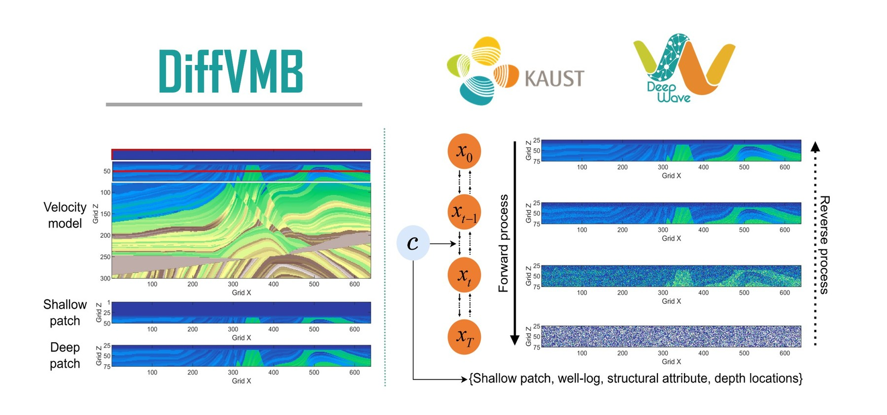

I develop neural networks that process, image and invert seismic data. My work brings generative diffusion models, self-supervised learning and physics-informed networks into exploration seismology.
I am a Research Scientist at King Abdullah University of Science and Technology (KAUST), working in the DeepWave Consortium, an industry-funded research alliance sponsored by international energy companies. I joined KAUST as a Postdoctoral Fellow in 2022, after receiving my PhD in Solid Geophysics from the University of Chinese Academy of Sciences. My earlier degrees in Applied Geophysics are from Jilin University.
My research applies neural networks to exploration seismology. I work on generative diffusion models, self-supervised learning and physics-informed neural networks for seismic processing, imaging and inversion. I serve as an Associate Editor for Geophysical Prospecting and co-supervise doctoral students.
Denoising, multiple suppression and trace reconstruction learned directly from field data.
Generative priors that guide velocity estimation and full waveform inversion.
Neural solvers and generative propagators for the wave equation.
One pretrained network that serves many processing tasks.